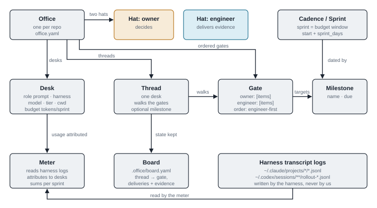
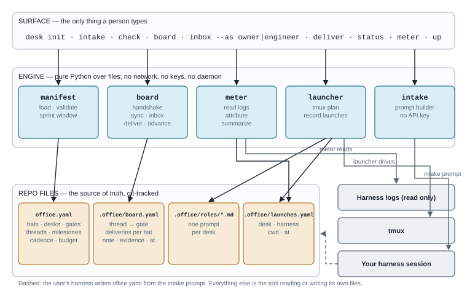
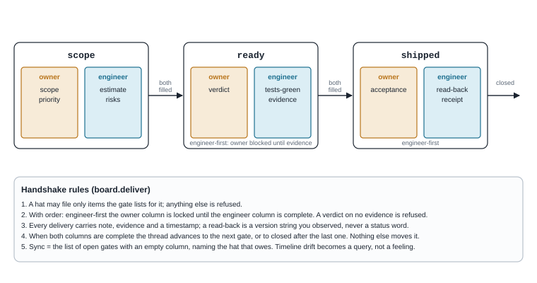
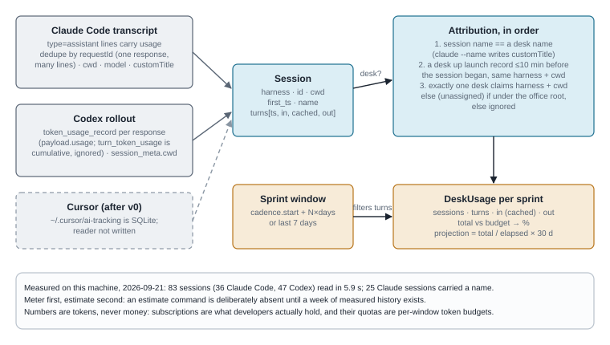
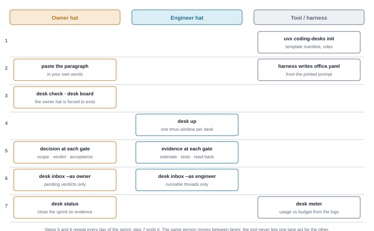
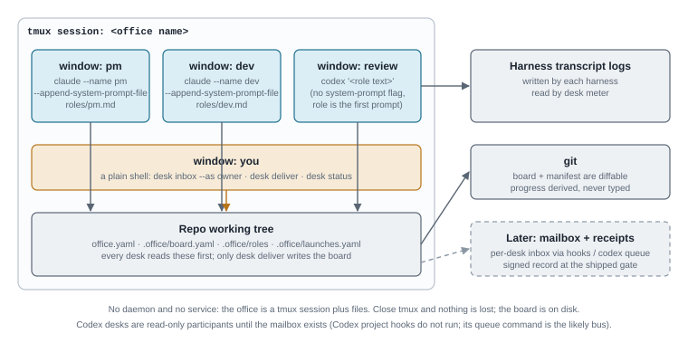

CODING DESKS · SOURCE OF TRUTH · 2026-09-21 · v0.0.1 · status: build paused after the v0 skeleton
An office of coding-harness sessions you already pay for, run from the CLI. One person wears two hats. The tool keeps them apart and makes every handoff between them a file in the repo.
This document is the single source of truth for the idea: the product requirements, the architecture with diagrams, the technical stack, what exists on disk today, and the decisions still open. It is kept local, next to the code, at docs/. It supersedes the chat it came from.
Origin. The owner had been running this by hand for weeks: seven named harness sessions across two projects, each with a role and an effort tier, and a runbook that assigns model and tier at handoff. The trigger was a prompt written for a hosted bot to build a Notion workspace with "two parties, product owner and engineer, both me, gated at deliverables, verifications and checks so the timeline stays in sync". Two lossy hops later the page landed in a workspace nobody else could see. The tool is that prompt, taken literally, with the board in the repo instead of a SaaS page.
Thesis. A solo developer is both product owner and engineer, and the failure mode is that the two blur. The office's value is keeping them apart so decisions surface as decisions. Concretely: two inboxes over one board. The owner inbox holds only items that need a verdict. The engineer inbox holds only threads whose scope is confirmed. A desk that hits an unconfirmed scope writes to the owner inbox and stops, rather than guessing. That is the whole difference between an office and a swarm.
What is new and what is not. Role-based AI software teams exist and are large: MetaGPT and ChatDev sell the "virtual software company" with CEO, PM and programmer roles; CrewAI does the generic version; BMAD does roles as skills inside one session; Claude Code has agent teams and cross-session messaging. All of them run an agent loop on API keys, or live inside one harness. The unclaimed angle: the office is made of the developer's existing harness sessions and existing subscriptions, and the question it answers is "which mix of Claude, Codex and Cursor plans covers this office for a month". No framework answers that because none is built on subscriptions. That claim must be searched before it goes into a README; "nobody does this" is a claim that has been falsified before.
Bringing engineering back to the CLI. The plan is a file, progress is a query over the repo, both are diffable and receiptable. The cadence lives next to the code, and the PM desk reads git, open PRs and desk transcripts to compute progress instead of being told it.
Developers running several AI coding sessions have no shared plan, no separation between deciding and executing, and no idea what the month will cost against the subscriptions they hold. Existing multi-agent frameworks replace the harness rather than organise it, and assume API keys.
| User | Job to be done |
|---|---|
| Solo developer with 1–3 harness subscriptions | Set up a planned cadence with roles, keep my own product decisions separate from my engineering, and know whether my plan tier covers the month. |
| Small team lead | Give each teammate's harness a role and a budget; see threads by gate; close sprints on evidence rather than status words. |
| Anyone who must show a third party what an agent did | Have the engineer side of every gate be evidence, and later a signed receipt (after v0). |
| Principle | Meaning |
|---|---|
| Files in the repo are the source | office.yaml is the contract, .office/board.yaml is the state. Git-tracked, diffable in PRs. Any UI or export is a view, never the source. |
| No daemon, no keys, no service | Everything is a pure function over files plus the logs the harness already writes. One uvx install. Close tmux and nothing is lost. |
| Two hats, kept apart | Owner decides; engineer delivers evidence. Same person allowed. The tool never lets one hat act for the other. |
| Gates are two-sided contracts | A gate passes only when both columns are filled. engineer-first locks a decision until evidence exists. |
| Evidence, never status words | A read-back is a version string you observed. Tests-green is filed by whoever ran them. |
| Meter first, estimate second | Subscription quotas are opaque and per-role usage varies by 10×. An estimate from priors is wrong by day three. Measure a week, then project. |
| Useful with one desk on day one | Board, inboxes and meter work in a single Claude Code session before any multi-harness bus exists. |
| Intake stays dumb | Parse, show the manifest, ask for confirmation, run. The confirmation step is the product; it is the moment the owner hat is forced to exist. |
| ID | Requirement | Status 09-21 |
|---|---|---|
| FR1 | Manifest with hats, desks, ordered gates with two columns and optional order, threads, milestones, cadence, per-desk token budget; validated with clear errors. | built, tested |
| FR2 | Board: reconcile threads from the manifest; file a deliverable with note/evidence/timestamp; refuse wrong items, double filings, and locked columns; advance when both columns are complete; close after the last gate. | built, tested |
| FR3 | Sync check: list open gates with an empty column, naming the hat that owes. | built, tested |
| FR4 | Two inboxes derived from the board: --as owner and --as engineer, plus "waiting on the other hat". | built, tested |
| FR5 | Meter: read Claude Code and Codex transcript logs, dedupe correctly, attribute sessions to desks, sum per sprint window, show % of budget and a 30-day projection. Tokens only, never money. | built, tested, smoke-run on real logs |
| FR6 | Launcher: one tmux window per desk with the role prompt, a plain "you" window, launch records for attribution; dry-run prints the plan. | built, dry-run only |
| FR7 | Intake: print a prompt carrying the schema and rules so the user's own harness writes the manifest. No API key. | built |
| FR8 | Status screen: sprint header, board, sync summary, meter table. | built |
| FR9 | Init: template manifest and three role prompts. | built |
A web UI. A daemon or message bus. API-key execution of agents. Cost in currency. An estimate before measured history exists. Notion or any SaaS as the source of truth. Competing on model quality.
The owner uses it daily on a real project for one sprint without reverting to hand-run sessions. A second person installs it with one command and gets a useful desk status in a single Claude Code session. The meter's sprint projection is within 20% of the next sprint's measured total.
| Risk | Mitigation |
|---|---|
| Harness log formats change | Readers are small and isolated; each has fixture tests; a reader that fails is skipped, never fatal. |
| Attribution is wrong when two desks share a harness and directory | Three ordered rules (name, launch record, unique claim); otherwise "(unassigned)" is shown, never guessed. |
| Codex desks cannot receive messages | Read-only participants in v0; the mailbox is after v0 and Codex has a queue command. |
| Scope creep into a framework | The principles table is the gate; every proposal is judged by adoption impact and by whether it needs a daemon or a key. |
| "Nobody does this" in public copy | Search first; narrow the claim to the subscription-budget angle. |

Figure 1. The concept model. Solid boxes are the manifest; board and meter are derived; the logs are external input.
| Term | Definition |
|---|---|
| Office | One per repo. Named. Defined by office.yaml; its tmux session carries the same name. |
| Hat | Exactly owner and engineer. A hat is a role a person is wearing, not a person. |
| Desk | A harness session with a role prompt, a harness (claude, codex, custom), optional model and tier, a working directory, and a token budget per sprint. |
| Gate | A named checkpoint with an owner column and an engineer column of deliverable items, and an optional order. Gates are ordered by their position in the manifest. |
| Thread | A concrete piece of work owned by one desk that walks the gates in order (or its own subset), optionally targeting a milestone. |
| Milestone | A named, optionally dated target that threads point at. |
| Sprint | A budget window: cadence.start plus N × sprint_days. Subscription quotas are weekly, so one week is the natural cadence. |
| Board | Per-thread state: current gate and every filed delivery with note, evidence and time. |
| Meter | Reader over the harness transcript logs; attributes sessions to desks; sums the sprint window; projects 30 days. |

Figure 2. Files are the source; the engine is pure Python over them; the CLI is the only surface. Logs, tmux and the user's own harness are the only external touchpoints.

Figure 3. The default three gates and the five rules the board enforces. Gates and items are user-defined; the rules are not.

Figure 4. Verified log shapes on 2026-09-21. Claude Code repeats one response's usage across several lines sharing a requestId; Codex records per-response usage and a cumulative per-turn figure that must be ignored.

Figure 5. Seven steps from a paragraph to a running office; steps 5 and 6 repeat daily.

Figure 6. A tmux session plus files. Verified harness facts: Claude Code accepts --name and --append-system-prompt-file and writes the name into the transcript as a custom-title record; Codex has no system-prompt flag and a queue command.
| Command | Does | Reads / writes |
|---|---|---|
desk init [--force] | Write the template manifest and pm/dev/review role prompts. | writes office.yaml, .office/roles |
desk intake [text|-f file] | Print the prompt that turns a description into the manifest, for the harness you are in. | stdout only |
desk check | Validate the manifest, print warnings, reconcile the board. | writes board |
desk board | Threads × gates with both columns and sync status. | reads |
desk inbox --as owner|engineer | What this hat owes now; what is waiting on the other hat. | reads |
desk deliver T HAT ITEM [--note] [--evidence] | File one deliverable; advance when both columns complete. | writes board |
desk status | Sprint header, board, sync summary, usage table. | reads board + logs |
desk meter [--days N] | Usage per desk for the sprint window or the last N days. | reads logs + launches |
desk up [--dry-run] [--no-attach] | Open the office in tmux; record launches for attribution. | writes launches |
$ desk inbox --as owner
OWNER INBOX sprint 0 · 2026-09-22 → 2026-09-29
▶ example-thread scope owes: scope, priority
engineer filed: estimate, risks
1 owed by owner · 0 waiting on engineer
$ desk deliver example-thread owner verdict
error: gate ready is engineer-first: owner may not file until engineer files ['tests-green', 'evidence']
$ desk board
office smoke-office sprint 0 · 2026-09-22 → 2026-09-29 milestones first-release
THREAD DESK GATE OWNER ENGINEER SYNC
example-thread dev ready — verdict — tests-green, evidence engineer owes
| Layer | Choice | Why |
|---|---|---|
| Language | Python ≥ 3.11, stdlib + PyYAML | One uvx install, no compile step, no daemon to ship. |
| Packaging | uv, hatchling, console script desk | Reproducible; publishable later without change. Package name coding-desks, module coding_desks. |
| State | Two YAML files in the repo | Diffable in PRs, no database, nothing to keep alive. |
| Multiplexing | tmux (3.4 verified here) | Already on every box that runs more than one session. |
| Usage data | Harness transcript logs on disk | Claude Code and Codex record per-turn tokens with the working directory; nothing to instrument. |
| Intake | A printed prompt for the harness you are in | No API key, no second bot, no relay. |
| Tests | pytest over a temp office and fixture log lines (25 tests) | The handshake and the meter dedupe are the two things that must not drift. |
| Output | Plain text tables, ANSI colour when a TTY, NO_COLOR honoured | Readable inside tmux panes and in logs. |
| Deliberately absent | daemon · web UI · SaaS export · API keys · currency | Each one is a reason not to install it. |
| File | Lines | Responsibility |
|---|---|---|
src/coding_desks/manifest.py | 266 | Dataclasses for Office/Desk/Gate/Thread/Milestone/Cadence; parse, load, warnings, find_root, sprint window. |
src/coding_desks/board.py | 202 | Board: load/save YAML, reconcile, deliver, row/rows, inbox, waiting_on_other; SyncRow with owes and status. |
src/coding_desks/meter.py | ~315 | Readers read_claude, read_codex; launches; attribute; summarize; window; projection. |
src/coding_desks/launcher.py | 65 | desk_command per harness, tmux_plan (pure), up. |
src/coding_desks/intake.py | 38 | build_prompt from the template plus rules. |
src/coding_desks/cli.py | 308 | argparse surface, table rendering, the nine commands. |
src/coding_desks/templates/ | — | office.yaml and roles/{pm,dev,review}.md. |
tests/ | — | test_manifest.py, test_board.py, test_meter.py, shared fixtures in conftest.py. |
| Item | Evidence |
|---|---|
| Repository | ~/coding-desks, local git only, one commit 4594afe by azank. No remote. Not created on GitHub; that is the owner's call. |
| Tests | 25 passed in 0.08 s, run with another project's interpreter because uv sync --offline could not resolve PyYAML from the cache and pytest's pygments wheel was missing offline. |
| Smoke run | In a temp office: init → check → four deliveries → gate passed to ready → a verdict correctly refused as engineer-first → board rendered → up --dry-run printed a correct tmux plan → intake printed the prompt. |
| Meter on real logs | 83 sessions read (36 Claude Code, 47 Codex) in 5.9 s; 25 Claude sessions carried a name; a 30-day sum attributed to a two-desk office over a real repo without writing any file into it. |
| Design page | docs/design-page.html, a one-page visual summary of the same architecture. |
| Defect | Detail |
|---|---|
desk deliver "waiting on" line | When both hats owe, the owner and engineer item lists are joined without a separator ("scope, priorityrisks"). Cosmetic; the board is correct. |
| Codex role quoting | The whole role text is passed as a shell-quoted first prompt; it works but the dry-run output is unreadable. Better: write the role to a temp file and pass a short pointer prompt. |
| Offline install | uv sync --offline fails on this machine; the project needs a lock file committed and a documented offline path, or simply a network install when allowed. |
| Cursor reader | Not written; ~/.cursor/ai-tracking/ai-code-tracking.db is SQLite and unexplored. |
| Codex system prompt | No flag exists; whether AGENTS.md in the desk's cwd is a better carrier for the role is untested. |
| Stage | Scope |
|---|---|
| v0 (remaining) | Fix the three cosmetic defects; run desk up for real once; commit a lock file; README; dogfood one sprint on a real project. |
| v0.1 | Cursor reader. desk estimate, which refuses to print a number until the meter has seven days of history, then states which plan tier each desk needs at the measured cadence. |
| v0.2 | Per-desk mailbox: a directory inbox read by a turn-start hook in Claude Code and Cursor; Codex via its queue command. This is what lets a PM desk hand a thread to a dev desk in another harness. |
| v0.3 | Receipts: the engineer's deliverable at the shipped gate becomes a signed record, so what the owner accepted is verifiably what was done. Designed to accept a receipt produced by an external hook; this tool never signs anything itself. |
| Views | Markdown or Notion export of the board as a view, never the source. |
| Decision | Options and the recommendation |
|---|---|
| Where the repo lives | Stay local; or a private GitHub repo under the org; or public from the start. Recommendation: private remote soon so the work is never laptop-only; public only after one dogfooded sprint and a competitor search. |
| Name | coding-desks with command desk. PyPI availability not checked (no network by rule). |
| License | MIT is in the tree. Confirm. |
| First dogfood target | The owner's own current project, with three desks mapped to the sessions already running by hand. |
name: my-office
hats: [owner, engineer]
cadence: { sprint_days: 7, start: 2026-09-22, review: friday }
gates:
scope: { owner: [scope, priority], engineer: [estimate, risks] }
ready: { owner: [verdict], engineer: [tests-green, evidence], order: engineer-first }
shipped: { owner: [acceptance], engineer: [read-back, receipt], order: engineer-first }
desks:
pm: { role: .office/roles/pm.md, harness: claude, model: opus, tier: high, budget: 10_000_000 }
dev: { role: .office/roles/dev.md, harness: claude, model: opus, tier: xhigh, budget: 36_000_000 }
review: { role: .office/roles/review.md, harness: codex, budget: 5_000_000 }
milestones:
- { name: first-release, due: 2026-10-15 }
threads:
- { name: example-thread, desk: dev, milestone: first-release }
| Harness | Fact |
|---|---|
| Claude Code | Flags --name, --append-system-prompt, --append-system-prompt-file. Transcript at ~/.claude/projects/<slug>/<session>.jsonl; assistant lines carry cwd, timestamp, sessionId, requestId, message.model, message.usage (input, cache_creation_input, cache_read_input, output). One response spans several lines with the same requestId and identical usage: 8 934 assistant lines were 3 873 unique requests in one file. A custom-title record carries the session name. |
| Codex | Sessions at ~/.codex/sessions/YYYY/MM/DD/rollout-*.jsonl; session_meta.payload.cwd; token_usage_record.payload.usage is per response (input, cached_input, cache_write_input, output, reasoning_output), turn_token_usage is cumulative within a turn. Has queue, exec, resume; no system-prompt flag. Project hooks did not run in a 09-21 spike. |
| Cursor | ~/.cursor/ai-tracking/ai-code-tracking.db (SQLite), ~/.cursor/hooks.json. Unexplored. |
| tmux | 3.4. |
End of document.